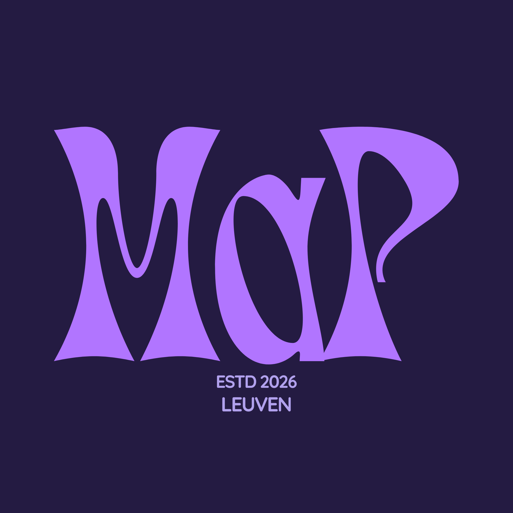

This project investigates how municipal spending relates to citizen perceptions across Flemish municipalities, using data from the Flemish Gemeente-Stadsmonitor. The interactive dashboard integrates financial indicators with citizen survey data, covering domains such as community life, social cohesion, mobility, and local livability. The visualization aims to support comparative analysis and benchmarking between municipalities. In particular, it seeks to uncover whether municipalities with similar characteristics exhibit differing relationships between public investment and citizen satisfaction.
We are a team of Master's students in the Master of Information Management programme at KU Leuven's Faculty of Economics and Business. As part of the Data Visualisation course, Dries De Rudder, Farid Guliyev, Hamza Khan, Ivana Diploma and Réka Sallai collaborated on a project focused on transforming complex municipal datasets into clear, engaging and actionable insights. By combining diverse academic backgrounds and perspectives, we aimed to demonstrate how interactive data visualisation can support storytelling, policy analysis and evidence-based decision-making.
Vlaamse Gemeente-Stadsmonitor in categories: - Community - Mobility - Poverty
Cultural expenditure and satisfaction indicators
Flemish municipalities
Interactive visual analytics using Tableau to perform exploratory analysis
The dashboard are created for municipal council members and local policymakers.
Rather than showing spending OR satisfaction in isolation, we combine them to enable a new question: "Are we getting value for money compared to similar municipalities?" This shifts budget conversations from accounting ("we spend €X on culture") to policy effectiveness ("we spend €X and achieve Y% satisfaction is that efficient compared to peers?").
Investigating the relationship between expenditure and municipal satisfaction.
As the results show, money is not an influential determinant in the satisfaction and policy outcomes related to diverse policy domains. This highlights that governing is more complicated then investing, expenditures and monetary aspects.
Comparing municipalities and by mibility type satisfaction levels.
The scatterplot reveals many municipalities with similar spending but very different outcome scores. Some municipalities spend above average but still report low outcomes. For policymakers, these situations are particularly noteworthy because they suggest that spending alone does not fully explain how effective policies are. The dashboard shifts the focus from “how much do we spend?” to “how well does spending seem to translate into results that citizens notice?”
The relationship between municipality expanditures and meeting ends.
Municipalities with higher expenditure generally demonstrate stronger satisfaction outcomes.
Some municipalities perform better than expected despite relatively modest expenditure.
Expenditure alone cannot fully explain differences in satisfaction levels.
Developing this dashboard provided valuable insights into both the technical and collaborative aspects of data visualization. One of our proudest achievements was the implementation of the diverging bar chart, which required advanced Tableau techniques, including calculated fields and complex data manipulations. Although some planned features, such as dynamic sorting and expenditure-based filtering, could not be fully realized due to technical constraints, these challenges highlighted the complexity of creating interactive and informative visualizations. The project also demonstrated that visualization design is rarely a linear process. Rather than applying principles one by one, we found that every design decision influenced multiple other elements of the dashboard. Adjustments to filters, calculations, sorting mechanisms, or visual encodings often created new challenges elsewhere, requiring continuous iteration and compromise. Working as a team further enriched this learning experience. Discussions and disagreements about design choices encouraged us to critically examine the dashboard’s purpose, target audience, and communication goals. These conversations helped us move beyond individual assumptions and make more deliberate design decisions. Overall, the project strengthened our technical skills, deepened our understanding of the interconnected nature of visualization design, and highlighted the value of collaboration in creating effective data-driven stories.